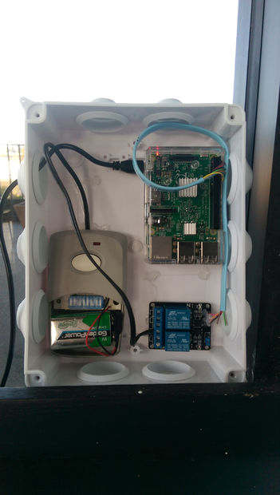
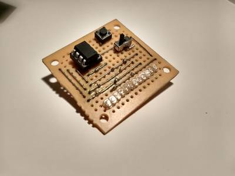

2016-05-26 - Nº 56

Editorial
Esta é a Newsletter Nº 56 que se apresenta com o mesmo formato que as anteriores. Se gostar da Newsletter partilhe-a!
Todas as Newsletters encontram-se indexadas no link.
Esta Newsletter tem os seguintes tópicos:
Esta semana foi atingido um novo recorde de envio massivo de informação à distância através de ondas de rádio. Foi enviado o equivalente ao conteúdo de um DVD em menos de 10 segundos a uma distância de 37 Kms. A Intel fez a aquisição da empresa Itseez Inc especializada em Software de visão de computador para IoT e carros auto-conduzidos. Foi igualmente esta semana que foi posto um ponto final na conjectura de Kelmans-Seymour, feita à 40 anos e apenas provada agora. Trata-se de uma conjectura no âmbito da teoria dos Grafos. Foi construído, no Dubai o primeiro edifício impresso em 3D.
Na Newsletter desta semana apresentamos diversos projetos de maker. Na rubrica "Documentação" apresentamos oito livros (eBooks) que podem ser descarregados livremente e que esta semana são sobre Lições em Circuitos Eléctricos - DC, AC, Semicondutores, Circuitos Digitais, Referencia e Experiências, um sobre Álgebra para iniciados e intermédia e outro sobre introdução ao Windows 10 para Profissionais de IT. Foi também publicada a revista newelectronics de 23 de Maio.
 João Alves ([email protected])
João Alves ([email protected])
O conteúdo da Newsletter encontra-se sob a licença  Creative Commons Attribution-NonCommercial-ShareAlike 4.0 International License.
Creative Commons Attribution-NonCommercial-ShareAlike 4.0 International License.
Novidades da Semana ^
World record in terrestrial radio transmission
"Transmitting the contents of a conventional DVD in under ten seconds by radio transmission is incredibly fast – and a new world record in wireless data transmission. With a data rate of 6 Gigabit per second over a distance of 37 kilometers, a collaborative project with the participation of researchers from the University of Stuttgart and the Fraunhofer Institute for Applied Solid State Physics IAF exceeded the state of the art by a factor of 10. The collaborative project ACCESS (Advanced E Band Satellite Link Studies) was carried out by a research group headed by Professor Ingmar Kallfass from the Institute of Robust Power Semiconductor Systems (ILH) from the University of Stuttgart, the Institut für Hochfrequenztechnik und Elektronik (IHE) from KIT, Radiometer Physics GmbH, and the Fraunhofer Institute for Applied Solid State Physics IAF."
Intel Acquires Computer Vision for IOT, Automotive
"Intel is transforming from a PC company to a company that powers the cloud and billions of smart, connected computing devices. These devices will use the power of Intel technology to process data being generated from “things,” connect to and learn from data being analyzed in the cloud, and deliver amazing new experiences. One of the amazing Internet of Things (IoT) experiences Intel is gearing up to deliver is autonomous driving. Americans spend some 75 billion hours a year driving. Morgan Stanley estimates that self-driving vehicles could deliver $507 billion in annual productivity gains – to cite just one compelling benefit. While the possibilities are exciting, the reality requires solving a myriad of technology challenges. Solutions will need to seamlessly deliver a combination of compute, connectivity, security, machine learning, human machine interfaces and functional safety. To win in automotive today and help deliver its exciting future, Intel is adding new capabilities to our automotive portfolio like functional safety and over-the-air software management. Another key requirement for self-driving cars is the ability to see and accurately interpret surroundings. One of the technologies necessary to support this capability is computer vision."
40-Year Math Mystery and Four Generations of Figuring
"This may sound like a familiar kind of riddle: How many brilliant mathematicians does it take to come up with and prove the Kelmans-Seymour Conjecture? But the answer is no joke, because arriving at it took mental toil that spanned four decades until this year, when mathematicians at the Georgia Institute of Technology finally announced a proof of that conjecture in Graph Theory."
FIRST 3D PRINTED OFFICE BUILDING OPENS IN DUBAI
"Vice President and Prime Minister of the UAE and Ruler of Dubai His Highness Sheikh Mohammed bin Rashid Al Maktoum inaugurated the first 3D printed office. The building is the first of its kind in the world prepared for actual use, taken into account the integration of a unique building design and 3D-printing technology to offer key services within the building, such as electricity, water, telecommunications and air-conditioning. The office space covers up to 250 square meters, while the exterior design reflects the most innovative forms of future work place. The design has been conceived to achieve a shift from the traditional form of work environments and provide greater opportunities to stimulate innovation and communication between work place teams. It also offers the possibilities for joint work with experts and innovators from around the world, and a platform to inspire ideas and develop relations between employees by establishing new methods for brainstorming sessions and creating a healthy and happy environment. The design also offers space for exhibitions and workshops as well as other events."
Outras notícias
- Network 3D Printing with Windows 10 IoT Core!
- E Ink Announces Advanced Color ePaper, a Breakthrough Technology for Color EPD Applications
- And yet it moves: 14 Galileo satellites now in orbit
- Microchip Debuts Industry’s First LoRa® Technology Evaluation Kits for Low-Power Wide-Area Networks (LPWAN)
- STM32F7 Microcontrollers from STMicroelectronics Expand Ecosystem with New Development Boards to Accelerate Embedded Design
Ciência e Tecnologia ^
Real-time behaviour synthesis for dynamic Hand-Manipulation, ICRA'14
"Dexterous hand manipulation is one of the most complex types of biological movement, and has proven very difficult to replicate in robots. The usual approaches to robotic control - following pre-defined trajectories or planning online with reduced models - are both inapplicable. Dexterous manipulation is so sensitive to small variations in contact force and object location that it seems to require online planning without any simplifications. Here we demonstrate for the first time online planning (or model-predictive control) with a full physics model of a humanoid hand, with 28 degrees of freedom and 48 pneumatic actuators. We augment the actuation space with motor synergies which speed up optimization without removing flexibility. Most of our results are in simulation, showing nonprehensile object manipulation as well as typing. In both cases the input to the system is a high level task description, while all details of the hand movement emerge online from fully automated numerical optimization. We also show preliminary results on a hardware platform we have developed "ADROIT" - a ShadowHand skeleton equipped with faster and more compliant actuation."
-
"In experiments involving a simulation of the human esophagus and stomach, researchers at MIT, the University of Sheffield, and the Tokyo Institute of Technology have demonstrated a tiny origami robot that can unfold itself from a swallowed capsule and, steered by external magnetic fields, crawl across the stomach wall to remove a swallowed button battery or patch a wound. The new work, which the researchers are presenting this week at the International Conference on Robotics and Automation, builds on a long sequence of papers on origami robots from the research group of Daniela Rus, the Andrew and Erna Viterbi Professor in MIT's Department of Electrical Engineering and Computer Science."
IBM Scientists Achieve Storage Memory Breakthrough
"For the first time, scientists at IBM (NYSE: IBM) Research have demonstrated reliably storing 3 bits of data per cell using a relatively new memory technology known as phase-change memory (PCM). The current memory landscape spans from venerable DRAM to hard disk drives to ubiquitous flash. But in the last several years PCM has attracted the industry's attention as a potential universal memory technology based on its combination of read/write speed, endurance, non-volatility and density. For example, PCM doesn't lose data when powered off, unlike DRAM, and the technology can endure at least 10 million write cycles, compared to an average flash USB stick, which tops out at 3,000 write cycles. "
-
"'Flat' and 'rigid' are terms typically used to describe electronic devices. But the increasing demand for flexible, wearable electronics, sensors, antennas and biomedical devices has led a team at Harvard's Wyss Institute for Biologically Inspired Engineering and John A. Paulson School of Engineering and Applied Sciences (SEAS) to innovate an eye-popping new way of printing complex metallic architectures - as though they are seemingly suspended in midair. Reported online May 16 in the Proceedings of the National Academy of Sciences, this laser-assisted direct ink writing method allows microscopic metallic, free-standing 3D structures to be printed in one step without auxiliary support material. The research was led by Wyss Core Faculty member Jennifer Lewis, Sc.D., who is also the Hansjörg Wyss Professor of Biologically Inspired Engineering at SEAS."
New Method of Producing Random Numbers Could Improve Cybersecurity
"With an advance that one cryptography expert called a "masterpiece," University of Texas at Austin computer scientists have developed a new method for producing truly random numbers, a breakthrough that could be used to encrypt data, make electronic voting more secure, conduct statistically significant polls and more accurately simulate complex systems such as Earth's climate. The new method creates truly random numbers with less computational effort than other methods, which could facilitate significantly higher levels of security for everything from consumer credit card transactions to military communications. Computer science professor David Zuckerman and graduate student Eshan Chattopadhyay will present research about their method in June at the annual Symposium on Theory of Computing (STOC), the Association for Computing Machinery's premier theoretical computer science conference. An invitation to present at the conference is based on a rigorous peer review process to evaluate the work's correctness and significance. Their paper will be one of three receiving the STOC Best Paper Award."
-
"We envision a machine-driven evolution of human body form and function, where the programmable nature of machines plays a crucial role. Robotic joints worn on the wrist turn into extra fingers so that a person acquires skills beyond what five fingers can offer, or performs 'tri-manual' tasks with the machine joints."
Documentação ^
A documentação é parte essencial do processo de aprendizagem e a Internet além de artigos interessantes de explorar também tem alguma documentação em formato PDF interessante de ler. Todos os links aqui apresentados são para conteúdo disponibilizado livremente pelo editor do livro.
Livros

- Lessons In Electric Circuits - Vol I - DC
- Lessons In Electric Circuits - Vol II - AC
- Lessons In Electric Circuits - Vol III - Semiconductors
- Lessons In Electric Circuits - Vol IV - Digital
- Lessons In Electric Circuits - Vol V - Reference
Lessons In Electric Circuits - Vol IV - Experiments
"Lessons in Electric Circuits was compiled from years of lecture notes and ideas, with the primary goal was to put readable, high-quality information of industrial electronics into the hands of students, yet keep the book as affordable as possible. This book was written to be a good enough book without delving too heavy on the math, while still maintaining a lot of important information."
Beginning and Intermediate Algebra
"Beginning and Intermediate Algebra was designed to reduce textbook costs to students while not reducing the quality of materials. This text includes many detailed examples for each section along with several problems for students to practice and master concepts. Complete answers are included for students to check work and receive immediate feedback on their progress. Topics covered include: pre-algebra review, solving linear equations, graphing linear equations, inequalities, systems of linear equations, polynomials, factoring, rational expressions and equations, radicals, quadratics, and functions including exponential, logarithmic and trigonometric."
Introducing Windows 10 for IT Professionals, Technical Overview
"Get a head start evaluating Windows 10—with technical insights from award-winning journalist and Windows expert Ed Bott. This guide introduces new features and capabilities, providing a practical, high-level overview for IT professionals ready to begin deployment planning now. This edition was written after the release of Windows 10 version 1511 in November 2015 and includes all of its enterprise-focused features. The goal of this book is to help you sort out what’s new in Windows 10, with a special emphasis on features that are different from the Windows versions you and your organization are using today, starting with an overview of the operating system, describing the many changes to the user experience, and diving deep into deployment and management tools where it’s necessary."
Revistas
-
"New Electronics is a fortnightly magazine focusing on technological innovation, news and the latest developments in the electronics sector. Downloadable as a digital page turner or pdf file, or offered as a hard copy, the New Electronics magazine is available in a format to suit you."
Modelos 3D ^
Com a disponibilidade de ferramentas que permitem dar azo a nossa imaginação na criação de peças 3D e espaços como o thingiverse para as publicar, esta rubrica apresenta alguns modelos selecionados que poderão ser úteis.
Fully Functional 3D Printed Vise
This is a 3D printed model of a functioning vise!
NOTE: I created this print to lightly hold electronic components while soldering, etc. It's not designed for, and should not be used for rigorous clamping force. This is a plastic model of a vice, not a real vice, and should be used according. As noted by user DevWolf in the comment section, PLA plastic is very rigid and can break under stress in unpredictable ways creating shrapnel like pieces that can cause injury.
This model has tight tolerances and may require a bit of sanding or cleanup at the end to fit together properly, depending on your printer, filament, etc.
I also used Simplify 3D to slice the model and generate supports, so results with other programs will vary.
I began with a base model provided by Tom over at the Ox Tools YouTube channel (links below) of his Wilton Baby Bullet vise. Originally it was designed to be machined out of metal, so I took the CAD files and modified them to be 3D printable, and finished the work that would normally occur during the machining process. I also worked to optimize it for better printing.
You can see a video of how this model was put together, as well as see it in action over on my YouTube channel (as well as lots of other projects): https://www.youtube.com/watch?v=zZy8RGfQPGo
Be sure to upload a picture if you print or modify a version, I'd love to see the results!
See print setting for printing tips.
Special thanks to Tom over at Ox tools for sharing the original model and allowing me to share it as well, and for the documenting the build of the real metal version of this vise!
You can find his info below: https://www.youtube.com/oxtoolco) http://www.oxtoolco.com/ You can check out his build of the REAL vise in a 24 part video series here: https://www.youtube.com/watch?v=_4dWOQv96jM
UPDATE 5/26/16: Modified description to clarify usage reccomendations
Wobbler Engine 2.0
Based off of http://www.thingiverse.com/thing:1176934.
A wobbler type compressed air engine with main bearings and a display base. When running (see video) achieved a speed of over 3300 RPM.
Bearings are 608ZZ. Spring is 3/8 x 3/4 compression. All bolts are M3.
https://www.youtube.com/watch?v=s4mL_voC1g8
Included is a .step file of the assembly if you would like to make your own modifications. Also a picture of how I printed some of the support parts.
Customizable Embossing Stamp
Use your own image to make an embossing stamp.
Features:
- prints fully assembled
- placement guide lines on the cover
- rad old-school flip phone styling
Projetos Maker ^
Diversos Projetos interessantes.
ESP8266 Desktop Clock (WiFi Synchronised!)
"The ESP8266 is a awesome chip; with integrated WiFi, 80MHz clock speed, total 160kb RAM, 512kb of flash memory, and a ton of other features, it makes a regular Arduino look like a joke. The project shown in this Instructable is based solely on the ESP8266-01 module, unlike several other projects on the web where it is used in tandem with another microcontroller. This makes it great demonstration of the capabilities of the ESP chip."
How to measure temperature very accurately with an Arduino and a TSYS01 Temperature Sensor Board
"While studying in university we were challenged as part of a course work into designing a box with very accurate temperature control. If the project were to succeed, multiple boxes were to be built and used in a research project studying the effect of surface material on the perceived temperature of flooring and other building materials. The project was deemed as very challenging by the university staff because the temperature inside the boxes should stay within 0.1C of the desired value. Therefore we would require the most accurate temperature sensor we could find. On one hand, the sensor should be factory calibrated to the desired temperature, because calibrating to within 0.1C of the national temperature standard is next to impossible on a simple setup of boiling and freezing water. On the other hand, an analog temperature sensor with a proclaimed accuracy of 0.1C might still produce inaccurate results after the value is converted to a digital value by an ADC (https://en.wikipedia.org/wiki/Analog-to-digital_converter)."
Wifi controlled Garden light with ESP8266
"I've got a bit of a thing for lights and being able to remotely control them. I particularly like this in the garden and even better if i can solar power them. I have some of the pound/dollar store stake lights but they are rather weak so i started to look around and found that the dollar/pound store also sold small pillar lights that i would be able to repurpose. I then stripped it down and retro fitted three 1w LED's and a ESP8266 wifi micro controller which shall allow me to control the light remotely either manually or via timer/events. The board i purchased can take 5 but on working out the voltage i would need more than 12v to drive them at full brightness and i didn't want to have to setup up the voltage as that would require another component so i settled on 3 which works nicely, i bridged two of the LED positions as they are in series so leaving them connected wasn't an option. I am using a dedicated Led driver board as these 1w led's must only be driven with 350ma of current, the beauty of this board is that it will increase the foward voltage if you increase extra LED's upto a maximum of 10. It must be noted however that each led shall take 3.3v so if you are planning on running 10 LED's then you shall require an input voltage of 33v, just below the units 35v rated maximum. As we are driving 3 LED's which require at least 9.9v which works great with out 12v supply. The other great feature of this board is that it has a pwm connection so that you can vary the brightness of the light by connecting it to a PWM pin on a microcontroller and sending the correct signal. This is excellent as it negates the need for any other hardware bar a step down converter to get 3.3v for the ESP 8266 board."
-
"Plants in their growth stage need a photo period of 18 hours of light and 6 of darkness and at this stage a lamp white / blue light is needed, so we'll use a fluorescent that will be only for the growth stage. For the stage of flowering is a photoperiod of 12 hours of light and 12 of darkness is needed as this tells the plant when starting the flowering cycle also it is recommended to use a lamp light orange and similar colors. There are special lamps to grow as sodium lamps, among others."
-
"They say "low & slow is the way to go". I had built a simple Smoker controller in a previous instructable. For V2 it's time to go big. I had posted a Wifi Meat Thermometer here before. I figured why not combine that with the smoker controller. I got this car diagnostic meter at a swapmeet and decided to make it into a new Monster Smoker Controller."
TinyANN, Artificial Neural Network meets ATTINY
"Welcome to my first instructable. It is a long time I follow this excellent site. I learn a lot from this community and I wish to return back the favor by publishing my own contribution. I do apologize for the English as it is not my native language. Remarks are highly appreciated. Since I discovered Intructables.com, I began to play with Arduino and robotic. From my educational background, I have some knowledge about Artificial Intelligence. So I thought it would be nice to put them together. Little by little, the idea to build a robot, based on some ATTINY processor and programmed using an Artificial Neural Network (ANN), began to blossom in my mind. I settled for an Avoiding Collision Turtle robot powered by a Fixed ANN. Later on, I will add a self-learning module using a Raspberry-Pi to train the ANN implemented here (Perhaps a next instructable?). Have a look at the video to watch this robot in action."
-
"The goal of this project is to develop a miniature chassis to experiment with very basic swarm robots. The prime inspiration is James McLurkin's fantastic MIT project from the early 1990's http://www.ai.mit.edu/projects/ants/."
-
"To be able to mimic Darth Vader during a party or any other occasion can be a lot of fun. Unfortunately commercial solutions are costly. The Hasbro Star Wars Darth Vader Voice Changer costs almost $300 on Amazon. In this instructable will explain how to make a cheap Darth Vader Chest Box that, with a microphone attached to it, changes your voice to Darth Vader's. As a bonus other effects can be selected on the Chest Box such as robot and high pitched voice."
-
"This scale is wireless. It may be useful where you can't operate a normal scale, due to the weather outside, or if you don't want to scare birds or other creatures away. With this scale you can weigh them. In this instructable, I used a 0 to 1 Kg load cell since I wanted to weigh hummingbirds and orioles that visited our nectar feeder. One end of the load cell was attached to the eaves, and the other end has a hook from which the support string for the feeder hangs. Many other load cells are available in different weight ranges, and they all can be hooked up the same way, the only difference being the zero factor and range factor which can be changed in the Arduino sketch."
$4 WiFi Door Alarm using a ESP8266 #IoT
"In this IoT project I will show you how to make a WiFi door alarm that alerts you wherever you are! I had his idea of designing a wifi enabled door alarm after a friend's house was broken into."
-
"Weird locomotion is a playful exploration of possibilities of introducing new (not always useful) functions to machines, focusing on their hands and legs, their effectors and locomotion systems."
Building a PIN Diode Geiger Counter
"Exactly 30 years ago a great disaster struck the region of Chernobyl: a nuclear accident occurred that released a large quantity of radioactive particles into the atmosphere. And it is only five years ago that, with the Fukushima Daiichi nuclear disaster, a second similar catastrophic event has taken place. These anniversaries did not directly let me build a PIN Photodiode based Geiger Counter, it is more or less a coincidence. The main drive to build such a device was my curiosity and (please forgive me) a fascinating green glow Ive seen on various fluorescent Uranium minerals under UV light. But in this context it should not be forgotten that at present there still is a significant increase in background radiation in some regions and some agricultural products due to these events."
Arduino countdown timer with setup buttons
"In this Instructables guide I will show you how to make your own Arduino two digit countdown timer. I made my own circuit by using the ATmega328 micro controller but this is an optional step. In this guide I will help you to make it easily on breadboard by using the Arduino uno board! We will be able to set the timer by pressing the setup buttons. We will use two digits seven segment display, so the maximum countdown time will be 99 seconds."
-
"Supplies- Fish food case- Servo- Wood- Arduino- Tools to cut wood- Jumper wires- Drill- Hot glue and wood glue Wiring your Circuit Wire your circuit to this picture. Code (Change time to what you want) /* Sweep by BARRAGAN This example code is in the public domain."
-
"This project includes a 6 digit password (123142), that must be entered if you want to unlock the safe. There are 4 buttons to submit characters(1, 2, 3, or 4), an enter button, and a clear screen/lock button. When the safe is unlocked, it will remain unlocked until the button to lock it is pressed. The locking mechanism is simple - a servo motor is mounted to the shoebox, and a slit is cut in the shoebox and the door flap. When in the locked position, the motor is turned in between the openings, making it not possible to open."
DIY Portable LED Lighting Panel
"A portable LED lighting panel can really come in handy for photography and video work, so today we're going to make a DIY version which is super useful, yet easy to make. So I'm constantly taking photos and video of things I'm working on, of projects, food, of myself for vlogging, Instagram etc... And one thing that's always a little tricky is lighting, especially if you'd like to photograph something in the evening. If it's kind of dark, then most photos and videos can get an orangy color and it just doesn't look very crisp. Also, if you're on the go and you're not in control of the setting, lighting can often be problematic. So I thought, what I and many other people really need is a small portable lighting panel."
DIY 3x3x3 LED Cube for Arduino Nano+
"My name is RGBFreak and I created a YouTube channel quite recently. I love DIY and I especially love LED's, so that's why I decided to make my own 3x3x3 LED Cube!"
-
"These 6 easy steps will tell you how to make a wooden claw machine controlled with Arduino."
-
"Do you sometimes develop with USB? I do. So I need to access data lines, bus voltage and I'd like to easily monitor the current too. I made myself a small companion (43.5 mm 22.5 mm, 9.5 g) to do that. Just a simple breakout board with one connector in and one out. And a little extra to make things easier. I call it USBuddy."
Joystick Controlled Robot Arm Using an Arduino
"This instructable is a hand-in for a school project that we made. The purpose of this project was to create a robot arm control using thumbsticks. We had to use an Arduino Uno for the control and in addition, we had to implement some sort of actuator or sensor in the setup. We modified a Logitech gamepad using the two thumbsticks. Two push buttons where available to use, but only one activates the magnet (on L3), and the button on R3 is unused. Our school had a robot arm, a Logitech gamepad controller, an electromagnet and two thumbsticks made available to us."
Upside Up - Robot Balancing Revisited
"This instructable walks you through building a simple, 2 wheeled balancing robot, and spends some time exploring the various factors influencing balancing performance. This is my second robot project, and I had two key motivationsto determine, and improve on, the factors limiting the first robots balancing performance, and to incorporate the more integrated Arduino 101 form factor. If interested, here is a link to the instructable for my first balancing robot project. The key components of this robot include the Arduino 101 board, an Arduino motor control shield, two 12V geared DC motors with encoders and a Bluetooth module. Finally, an inexpensive battery allows the robot greater mobility and a companion Android app enables robot tuning and control."
-
"Learn how to make your own Mood light out of an Arduino!!!"
Parallel Processing Arduino Style Make Massive NeoPixel Displays With Nanoscale Concurrent Computing
"Weve already seen that it is possible to drive thousands of WS2812B NeoPixels with a lowly Arduino using careful bit-banging. But what if we could bang out 8 bits at a time rather than sending them single file? Could it be possible to drive 8 times as many strings (or get 8 times the refresh rate) from our Arduino by processing bits in parallel? It would be like having a tiny pipelined GPU render engine inside our Arduino!"
-
"I recently received my first couple of nRF24L01+ modules. But soon, I realised that the Arduino UNO onboard 3.3V regulator was not capable of driving the nRF24 modules at full power. I ended up with lots of wiring between the Arduino UNO, breadboard with 3.3V regulator, and nRF24 module. Thus I decided to build a set of shields to make it easier for me testing these modules."
PIGate, web enabled garage door/gate opener

"There is something very satisfying about clicking on a web interface or hitting a button on an app and seeing some physical event occur. It's a bridge between the virtual word and the tangible, and is the main reason I and others like me love working with electronics. So if You have ever lost your Garage or electric gate remote, had the hassle of sharing just a few remotes between an office or maybe just want to be able to control your gate with your phone, then this is a project worthy of at least consideration. A small hint of Linux wizardry and a simple expressjs application is all that is needed to get this project up and running."
-
"My goal was to create a programmable scale for weighing objects, parts counting, even directing product flow on a conveyor system. I needed a load cell, a Arduino, and an amplifier."
Easy IoT weather station with multiple sensors
"In this tutorial, I will walk you through the steps to build an easy and cheap IOT weather station. The retrieved data is pushed via a wifi shield to Thingspeak. The data can be analysed on the Thingspeak channel or on a personal website as can be seen in the pictures above. There are some other NodeMcu or ESP8266 weather stations published on the web. Nevertheless they do not include the sensors I used and often are programmed in the more difficult language: LUA."
-

"First f all I would like to point out that this project is not made by me, (I made the device shown here following another instructable).The sole purpose of this instructable is to correct lots of the mistakes the previous project had."
-
"I have always liked movies like National Treasure and the like. Ones that has a team of people that are running all over trying to solve some riddle or a string of riddles to, get the gold, get the girl, save the world, become instantly rich,etc. I have three adult children and getting them gifts for Christmas or birthdays has always been a challenge. The average gift holds their interest for only a short time and I wanted to make something that they would remember and talk about with their children. So I created a treasure hunt that wound its way around our town placing clues and keys in libraries, police stations, school play grounds, friendly businesses, parks, memorials and anyplace else that catches my fertile imagination. The first version was a horrible failure. The kids were good sports about my mistakes and we muddled through. Version two was much better as I got my pride out of the way and asked for help. Version three backslid some as I started using Arduinos to make the final prize more flashy. The fourth version was a total success. This is an instructable based on the fourth version or how I built my "Treasure Box""
-
"A couple of weeks ago, I noticed the hole in my monitor stand at work is almost exacly the same diameter as a ring of 24 NeoPixels that I had lying around. The back of the monitor faces several coworkers, so I decided to put the ring and another, smaller one to good use to make a functional clock using that space. As I'm also a huge fan of 123D Circuits (truth be told, I'm one of the developers). I decided to create the entire project there and get everything working before ever touching the physical electronics."
56 Joule Coilgun from Salvaged Parts v2.0
"Have you ever wanted to fire a projectile using the power of electromagnetism? Then this instructable is for you. In one of my old instructables, I show you how to build a coilgun, or gauss gun, from disposable camera capacitors and circuit board. Nowadays, disposable cameras are hard to come by, I had to buy the disposable camera shown in my previous instructable on ebay. Also, the coilgun in that instructable was not very powerful. In this instructable, I will show how to build a better, more powerful coilgun from scratch. The video below will complement this instructable with an explanation of how this coilgun works and a demonstration of it firing."
-
"What you will need.A small solar panel Rechargeable batteries Wires And micro USB port A sodor ironA battery packWire strippersAnd something to put everything in. "
Build a Cloud-Connected ESP8266 Power Meter
"Controlling the electrical consumption in your home is one of the most important thing you can do, both because of environmental concerns & to reduce the electricity bill at the end of the month. There are countless of electrical power meters out there, but in this guide, Ill show you how to build your own, and to use the ESP8266 feather board to measure how much power a single device is using. Note that this guide is about measuring power for DC (Direct Current) devices only."
Low Voltage DC Power Distribution and Measurement Adapter
"Some time ago i bought a nice 5V switching mode PSU to have enough power for a raspberry and all stuff in want to connect to it. In another instructable i wrote some time ago, i showed how i like to wire it up to have safe and durable connections - even for my breadboard setups - and do not actually need to really care about them to much any longer. ( You can find this instructable over here if you are curious. ) Well, i even wanted to have some measuring on how many volts my PSU actually delivers and how many ampere all this stuff consumes. For this purpose, i just bought a cheapo led meter which can measure from 0 to 100 volts and from 0 to 10 ampere. Additionally it needs a power supply which can deliver anything between 4.5 and 30 volts."
-
"Here we are with the classic RFID door lock. It's classic in that whole, "We live in the future and take it for granted at this point" sense. In this tutorial, we will set up a door latch that can be opened with the swipe of an RFID Tag! We will program a list of acceptable 'key' cards that will unlatch the door for a specified amount of time. This is a really simple project, but it does require that you alter your door jamb, so be prepared to do some wood work if you the strike plate to fit securely and flush."
DIY | Ambilight Using Arduino Nano
"In this Instructable I will be teaching you how you can create your own (b)ambilight for under $40! Keep in mind that the Ambilight will only work on a PC running the Bambilight software."
-
"Here is the lovely tiny LED wall I made with Wio nodes. Every one can control it through the internet. There are 30 LED bars on the board, each bar has ten led. Every one in every where can control every bar he/she likes with the API of Wio link. Here is the step to implement the Internet Of Led Wall."
-
"In this instructable we'll make our own USB casing using 3D printing."
-
"The idea of being able to hide a transmitter in a pen is very appealing. In an effort to reduce the size of this design, we have used surface-mount components. Firstly, the thought of using the coil in the tank circuit for transmitting RF was a little far fetched, but we used it as an example for those who were interested in experimenting with our circuits. Now we have gone back to a conventional antenna, the whip. The whip or straight-line antenna can be coiled, wound longitudinally or folded. The way it is wound makes a big difference to its effectiveness, but when you are limited in space, you have to accept these limitations. Even though we have used this antenna set up in our previous pen bugs we have considerably improved the circuit to the point were it has low battery consumption, but high RF output. The size of this design has been reduced considerably by using surface-mount components."
-
"This project uses NE555."
-
"Though, its not so far out there, in fact. Light can be converted to DC current with solar panels, electricity can be converted to magnetism as I did in my last article, in a microphone sound waves are converted to an electrical signal (by vibrating a magnet near a coil), solar rays can even be focused and converted to heat in awesome devices like this! When we think about it, energy is all around us and can be harvested in an enumerable many of ways. Today, we are going to take a rather novel approach. We are going to build a device specifically designed to sense and capture a particular band of energy which is all around us. The earth is magnetic and anyone who has ever used a compass knows this. Magnetic bodies in motion produce electricity, we can see this in any alternator, like the one in your car. So, therefore the earth is electric as well as magnetic, by definition. "
-
"Im always looking for a new project to do at my robotics workshop for kids. While spider robots are intriguing, almost all of them are either too complex involving 10+ servos or way over-budget for my workshop. In search for cheaper alternatives, I found this project: http://letsmakerobots.com/node/38744. Since this project appears to fit my budget range of $40-$60 and not too difficult (I think) for kids to work on, I decided to build a prototype."
4.5Amps Bipolar Stepper Motor driver based on TB6600
"Bipolar stepper drive board described here has been designed around TB6600HG IC. The TB6600HG is PWM chopper type single chip bipolar sinusoidal micro-step stepping driver. Maximum Load 4.5A, Supply 10V to 42V DC."
Arduino Password Unlock Door Security System
"Hello! In this Instructables guide I will show you how to make your own password unlock door system by using the Arduino uno board. I made my own circuit by using the ATmega328 micro controller but this is an optional step. In this guide I will help you to make it easily on breadboard by using the Arduino uno board, and I will give you some extra tips on how you can make your own Arduino-based custom circuit. By using this system you will be able to unlock a door for 5 seconds. After 5 seconds the electrical door opener will be automatically be locked. You can unlock it by typing the correct password and pressing the '*' button. If you want to change the current password, you can do it by pressing the 'A' button and if you want to skip or abord an operation you can do it by pressing the '#' button. It also has a buzzer for making various tones during operation."
ARDUINO BASED VOICE ACTIVATED HOME APPLIANCES
"ACTIVATING HOME APPLIANCES with voice using bluetooth is a simplest way of making your home "A SMART HOME". In this series of STEPS.we are going to find out how cool is that to switch on the fan by simply sitting in a place. INTERESTINGLY you can command your ARDUINO like "IRONMAN COMMANDS JARVIS" i had made a sheild for arduino and bluetooth.ARDUINO is at the back of the board."
Bosch BME280 real-time plotting GUI
"In this project Ive ported my BME280 driver implementation from the previous project (http://www.instructables.com/id/BME280-Weather-St...) to Arduino and built a Graphical User Interface that plots the received sensor values in real-time on a PC. The sensor breakout is connected to the Arduino via I2C and data is then streamed to the PC over the boards serial port."
-
"This is a miniature desktop vector plotter made from a compact photo printer and a DVD drive."
-
"The goal of this instructable is to create a device that will test if LEDs work. Placing the LED legs into the female pin headers and pressing the button will determine if the led works. Before you begin with this project, you should have a basic understanding of 3D printing and soldering. If you're unable to do these things, I'd recommend saving this project for later."
Make Esp8266 Dev Board From Scratch
"ESP8266 needs no introduction. It is the cheapest WIFI module available and one can find many interesting projects online. ESP8266 has many variants starting from ESP01 to ESP13 (getting added every few months) I got really excited watching few applications of ESP8266 and bought a ESP12E module. It was not easy to work with this module as the pins are not breadboard friendly or PCB friendly. I had to build a custom dev board to test it out. I could not afford to buy a ready to use ESP8266 dev board, as these are very expensive, in India. And there is no fun in it. To get started with this module, I had to pick information from several post/blogs etc. In this instructable I will consolidate all info, issues and their solutions, I discovered during build and testing."
That's all Folks!